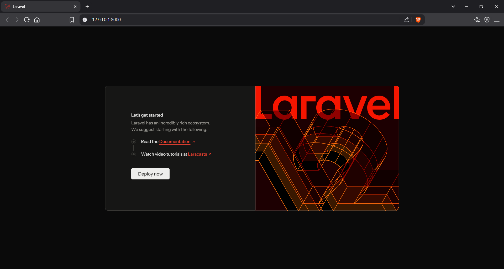
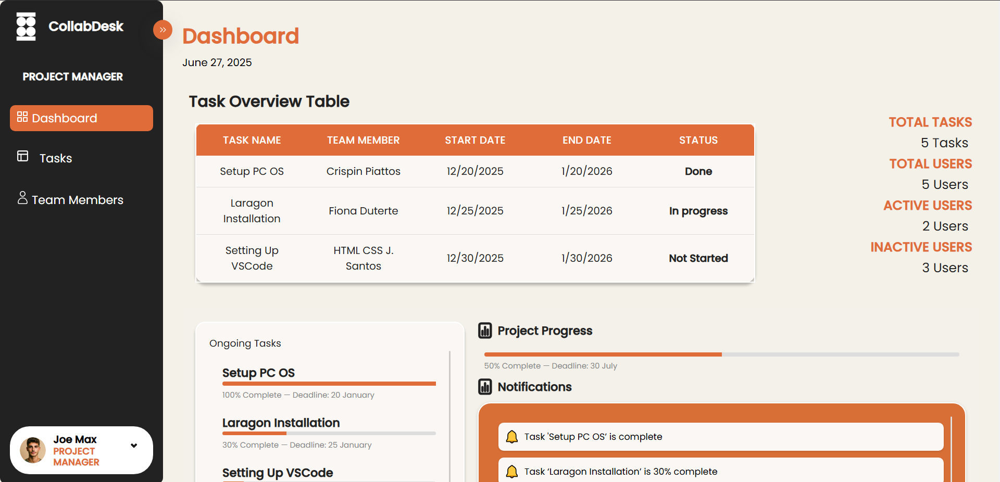

In Final Activity 1, we were tasked to install Laravel framework
in our computers. Laravel is a PHP framework that allows to build
web applications. With this framework, we can develop web applications
that can handle data rather than just a static website. Installing the framework
was quite challenging at first, but it makes me realize learning cmd and powershell can help a lot.
That is exactly what I did. I was able to successfully install Laravel afterwards.
As for the specifics:
1. I downloaded Laragon as the deployment environment for the project
2. I downloaded Composer to manage the libraries needed for the project
3. Using the composer, I installed Laravel
4. Using Laragon, I made a project containing all the pre-built files needed for deployment
5. Using my IDE, VSCode, I accessed the project then I ran it using "php artisan serve"
Below is my work:

In Activity 2, we were tasked to create an account in our project. Using the project I made with
Laragon, I setup the database to be used for storing user credentials in the .env file. I used
MySQL Workbench as a database. Afterwards, I installed the Authentication Scaffolding through
"composer require laravel/ui" and "php artisan ui bootstrap --auth" for the controllers, views, and routes.
Next, I installed the NPM dependencies "npm install" and "npm run dev" to compile the CSS and JS files.
To run the project, I typed "php artisan serve".
Once I run it, I saw the Register and Login button that enables
me to create an account and log in. With that, I made an account and logged in. I verified the account by checking the
database. I confirmed that the credentials are in the database and I concluded the activity.
The activity was challenging because I was overwhelmed with amount of files at first, but I was able to do it
by learning the files for controllers, views, and routes.
Below is my work:
In Final Activity 3, we were tasked to create a CRUD functionality in our Laravel Projects.
To start, I setup a database in MySQL Workbench just like the previous activity. Afterwards,
I created a controller and made CRUD methods inside it. Then I defined the routes and created views.
Next, I tested the project and it was working. That concludes the process of final activity 3.
With this activity, I became more familiar of the controllers, views, and routes, giving me a grasp of
web applications store data behind the scenes.
Below is my work:
For our Final Project in Web Development, we are tasked to create a Task Management application using Laravel.
I contributed in the group as the requirements analyzer who identifies the functionality and roles needed for
the application as a guide for the developers. I also participated in making the wireframe for one of the roles in
as well as creating a front-end page for that role.
I find it challenging since I alse needed to understand the code of the main assignee for front-end part of the app.
By managing my time and spending it towards learning the requirements, designs, and code, I was able to accomplish my
part in the group project.
Below is the part of the project that I have worked on: (subject to changes)
